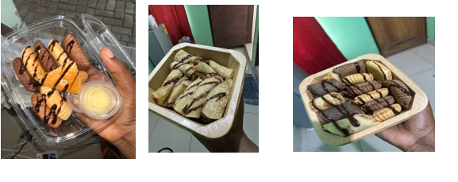

HOW I STARTED MY SMALL BUSINESS
I am a public relations student of the university of professional studies Accra in level 400 student I’ve always lived in please say I have always wanted to start a business, so one day I decided to start a new business I didn’t have any vast knowledge about how to start a business what to do and what not to do but during my journey I learnt a lot of things. So this is how it all started My mother is a caterer and she bakes mostly during the festive seasons, one day, she baked doughnuts and then I realized oh this recipe is not that difficult to bake and it doesn’t need a lot of stress, so I told her I wanted to start making the doughnuts to sell on campus, I asked her how she does it, The ingredients, the proportions and all that and then she taught me so after she taught me, she told me to make a batch of doughnuts the next day to see if I’m really good at it and to see if it would be good to start a business with. So I made it, to her surprise, it was okay, I just added a little bit too much soda but aside that she said everything was good so I learned from that. Luckily, she had a more than one machine for the Donuts and so I decided to borrow a machine from her, until I get my own machine. I also loved making pancakes so I decided to add it to the doughnut business. I had no money what so ever, I did not even have a source of income but I was determined to start, luckily, when I was leaving for school, my Uncle gave me money for my up keep and I decided to use it to start my doughnuts and pancake business so I went to the market to buy my ingredient and package boxes, luckily my mom and I used to go to the market most of the time so I knew my way around the market so I went to the market bought stuff for the Donuts and pancakes, and then I asked my Big Brother to create a flyer for me since he is a graphic designer, he created the flyer for me I sent it to my close friends, posted it to my stories on Snapchat, Instagram, WhatsApp and in most of the groups I am in just for people to advertise it and the feedback I got was really good the next day I had orders coming in from people I made my friends come to taste it to see if it was OK before I started to sell it out. This is how I started my all business.
